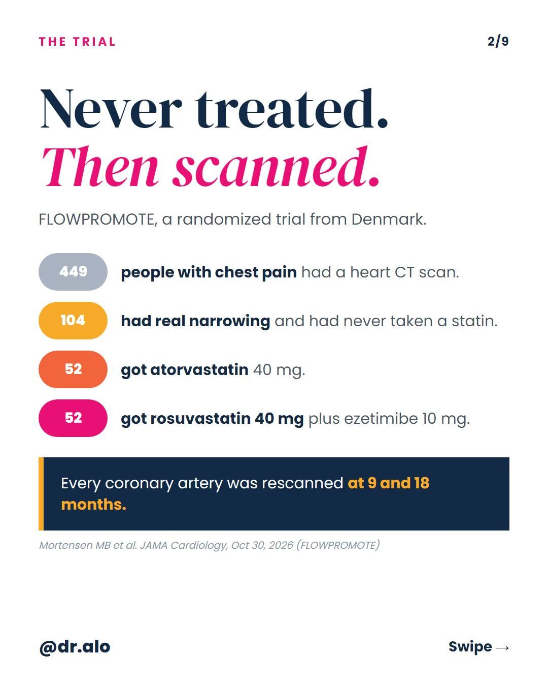
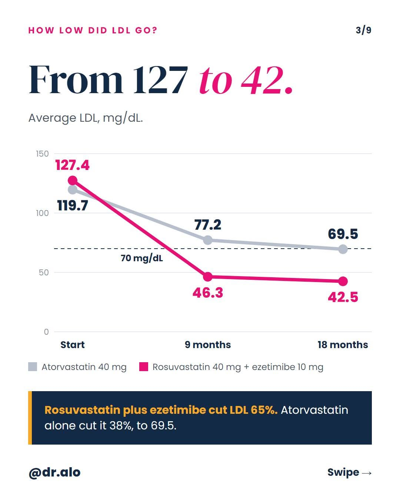
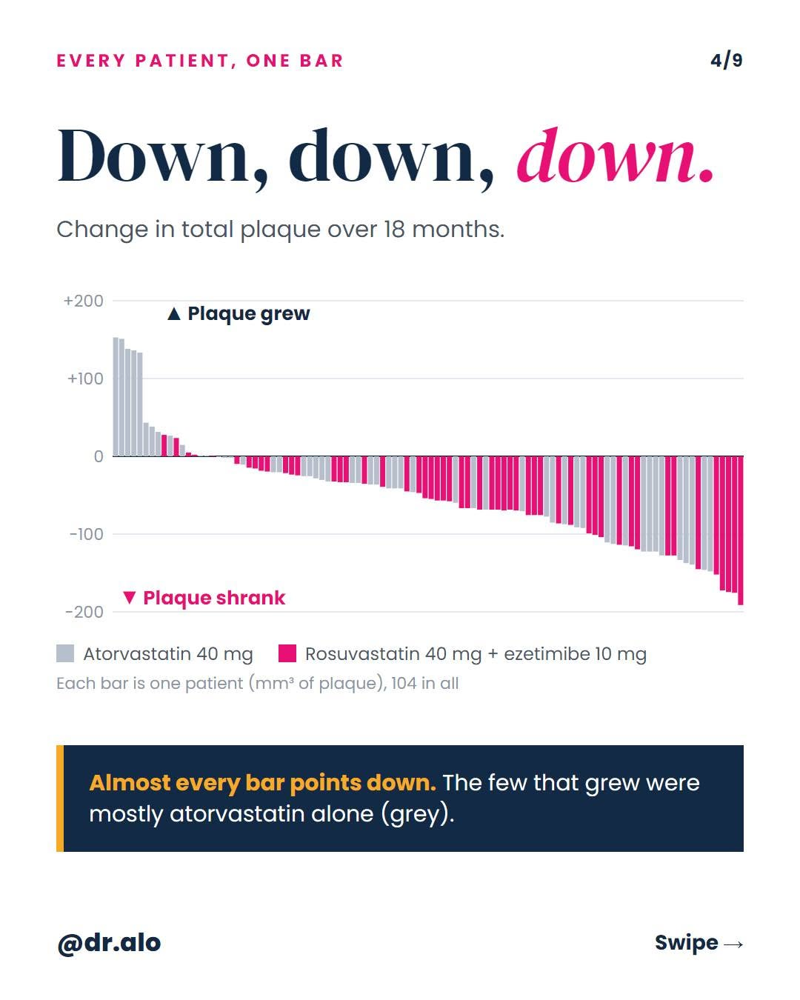
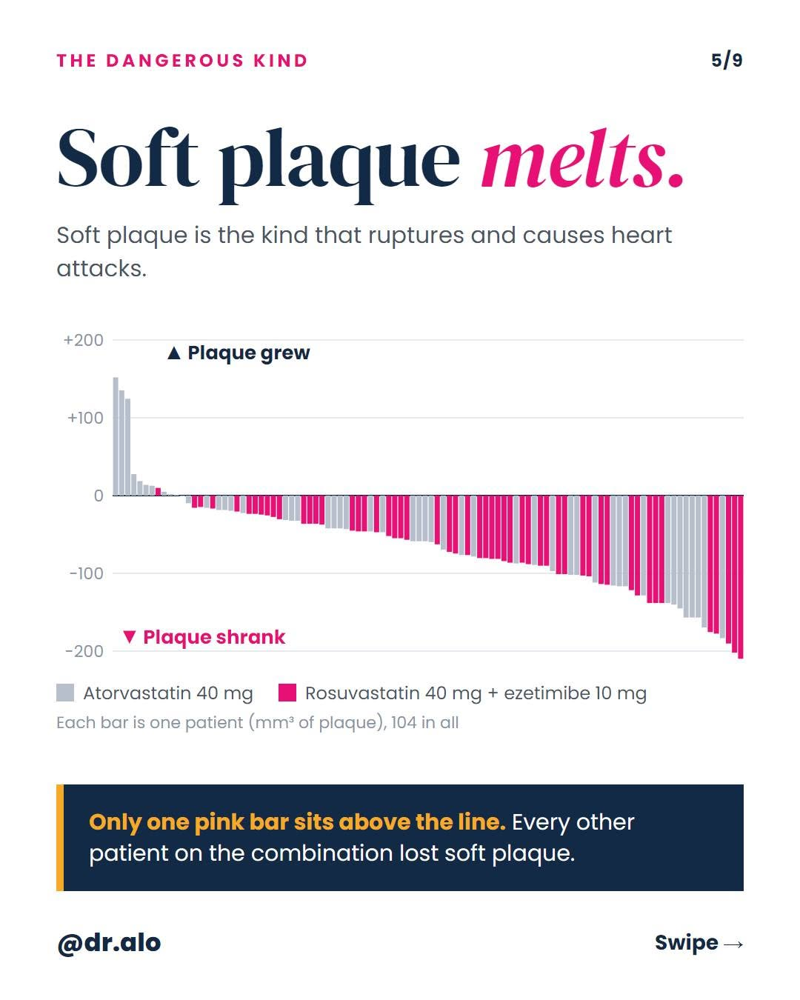

Soft plaque melts away. A brand new trial just showed it 🫀
FLOWPROMOTE (JAMA Cardiology, Oct 30, 2026) took 104 people with real coronary narrowing who had never taken a statin, and scanned every artery in the heart with CT.
Half got atorvastatin 40 mg. Half got rosuvastatin 40 mg plus ezetimibe 10 mg, the combination I use in most of my patients.
After 18 months:
📉 LDL fell to 42.5 on the combination vs 69.5 on atorvastatin alone
📉 Soft plaque, the kind that ruptures, shrank 28.2% vs 20.0%
✅ Soft plaque shrank in 51 of 52 patients on the combination
And if your calcium score went up on a statin, don't panic. Calcified plaque rose in both groups as soft plaque hardened and stabilized.
The lower your LDL, the more your arteries heal.
Full breakdown with every chart and the fine print: dralo.net/blog/reverse-soft-plaque
Save this and send it to someone who just got a scary CT result.
This is education, not medical advice. Talk to your own doctor before changing any medication.
#heartdisease #cholesterol #LDL #plaque #statins #cardiology #hearthealth #drAlo




